0.79–2.098
median 3.774
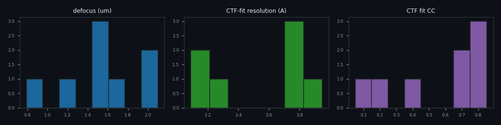
- ice / contamination — 4 micrograph(s)
- weak CTF / astigmatism — 3 micrograph(s)
- drift / blur — 2 micrograph(s)
Triage summary (Claude)
From 8 micrographs collected, 4 passed QC (50% pass rate), 3 were flagged, and 1 was rejected. The dominant failure mode is ice/contamination (4 instances), followed by weak CTF/astigmatism (3 instances) and drift/blur (2 instances). The defocus range spans 0.79-2.10 μm (median 1.5 μm), with resolution averaging 3.55 Å where measurable. CTF fit quality is highly variable (fit_cc: 0.049-0.851, median 0.704). One micrograph shows severe drift with undetectable CTF signal, while another has significant astigmatism (0.61 μm). **Recommendation: Improve specimen preparation to reduce ice contamination and check column alignment to minimize astigmatism.**
| # | micrograph | power spectrum | radial profile | name | verdict | metrics | reasons |
|---|---|---|---|---|---|---|---|
| 1 | 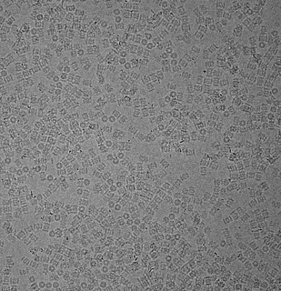 |
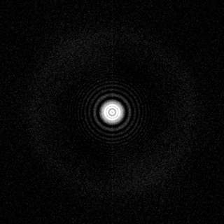 |
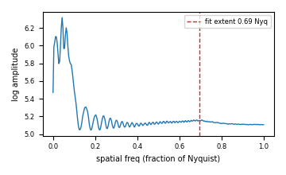 |
empiar10025_T20S_02.mrc 7676x7420 |
PASS score 1.00 |
CTF: df=2.10 um, astig=0.00@0 fit: cc=0.72, res=3.8 A, rings=28, extent=0.69 Nyq Drift: hf=0.831, aniso=0.00, tenengrad=22.21 Contam: bright=0.00%, blobs=0 (0.00%), ice~0.63 |
good Thon rings, sharp, clean background |
| 2 | 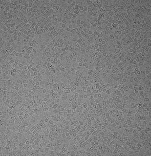 |
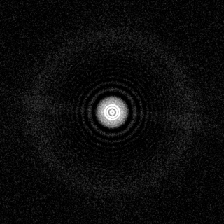 |
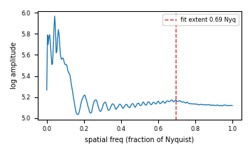 |
empiar10025_T20S_01.mrc 7676x7420 |
PASS score 1.00 |
CTF: df=1.23 um, astig=0.00@0 fit: cc=0.68, res=3.8 A, rings=16, extent=0.69 Nyq Drift: hf=0.836, aniso=0.00, tenengrad=23.20 Contam: bright=0.00%, blobs=0 (0.00%), ice~0.63 |
good Thon rings, sharp, clean background |
| 3 |  |
 |
 |
synth_good_01.mrc 1024x1024 |
PASS score 0.97 |
CTF: df=1.50 um, astig=0.00@0 fit: cc=0.85, res=3.1 A, rings=29, extent=0.65 Nyq Drift: hf=0.729, aniso=0.00, tenengrad=27.14 Contam: bright=0.00%, blobs=0 (0.00%), ice~0.63 |
good Thon rings, sharp, clean background |
| 4 | 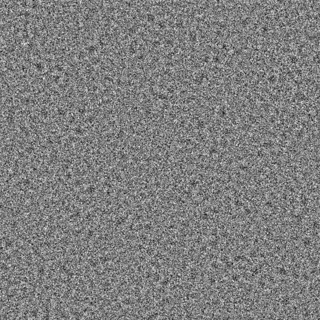 |
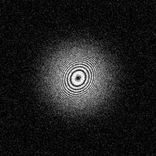 |
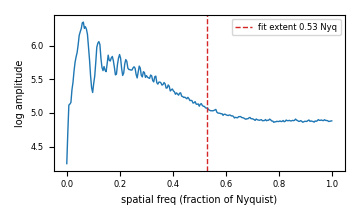 |
synth_astig_01.mrc 1024x1024 |
FLAG score 0.92 |
CTF: df=2.00 um, astig=0.61@33 fit: cc=0.80, res=3.8 A, rings=27, extent=0.53 Nyq Drift: hf=0.728, aniso=0.00, tenengrad=27.10 Contam: bright=0.00%, blobs=0 (0.00%), ice~0.63 |
high astigmatism (0.61 um @ 33 deg) |
| 5 | 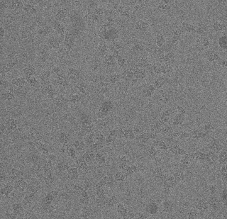 |
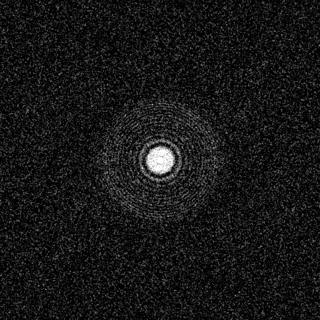 |
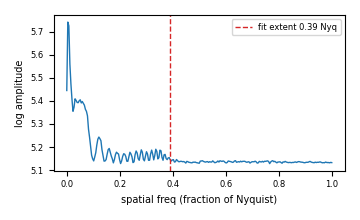 |
empiar10061_bgal_01.mrc 7420x7676 |
PASS score 0.85 |
CTF: df=0.79 um, astig=0.00@160 fit: cc=0.43, res=3.3 A, rings=13, extent=0.39 Nyq Drift: hf=0.837, aniso=0.00, tenengrad=24.02 Contam: bright=0.00%, blobs=0 (0.00%), ice~0.63 |
good Thon rings, sharp, clean background |
| 6 |  |
 |
 |
synth_carbon_01.mrc 1024x1024 |
FLAG score 0.83 |
CTF: df=1.50 um, astig=0.00@0 fit: cc=0.78, res=3.2 A, rings=27, extent=0.62 Nyq Drift: hf=0.723, aniso=0.01, tenengrad=0.23 Contam: bright=0.00%, blobs=0 (0.00%), ice~0.63 |
non-uniform texture (local-var CV=6.4) -> carbon/contam |
| 7 |  |
 |
 |
synth_ice_01.mrc 1024x1024 |
FLAG score 0.62 |
CTF: df=1.61 um, astig=0.00@0 fit: cc=0.20, res=3.9 A, rings=19, extent=0.51 Nyq Drift: hf=0.593, aniso=0.01, tenengrad=2.05 Contam: bright=2.13%, blobs=8 (2.13%), ice~0.63 |
bright outlier pixels 2.1% -> ice/contamination; 8 contamination blobs (2.1% area); non-uniform texture (local-var CV=7.9) -> carbon/contam |
| 8 |  |
 |
 |
synth_drift_01.mrc 1024x1024 |
REJECT score 0.37 |
CTF: df=1.50 um, astig=0.00@0 fit: cc=0.05, res=n/a A, rings=0, extent=0.00 Nyq Drift: hf=0.002, aniso=0.27, tenengrad=5.50 Contam: bright=0.00%, blobs=0 (0.00%), ice~0.63 |
weak/limited Thon rings (extent=0.00 Nyq, fit_cc=0.05); low high-frequency power (hf_frac=0.002) -> drift/blur; HARD REJECT: no detectable CTF signal; HARD REJECT: severe drift/blur |
Methods. CTF estimated by a 2D fit (defocus, astigmatism) of the
tiled, background-subtracted amplitude spectrum against the theoretical
CTF2, following Rohou & Grigorieff (2015), CTFFIND4,
J. Struct. Biol. 192:216. The peak normalised cross-correlation is the fit
confidence; the highest frequency with model–data agreement is the
CTF-fit resolution. Drift = high-frequency power fraction + Tenengrad
gradient energy + power-spectrum azimuthal anisotropy (directional drift).
Contamination = robust bright-outlier fraction + connected-component
blob detection (scikit-image) + local-variance uniformity; ice proxy
from per-image contrast. Verdict combines weighted sub-scores with documented
hard gates (see score.py THRESHOLDS).